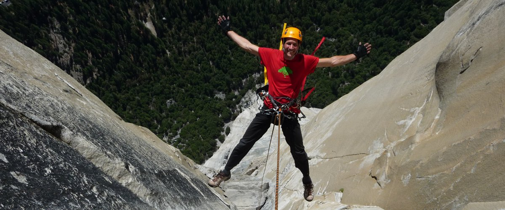

The idea behind “Green Tree” is that we all should give to get. It was materialized almost 20 years ago as a small climbing shop where people can get advice and gear for the sport (real gear, not the stuff that makes money :) ). But before its materialization, it was conceived as idea, as a way of life and climbing shop was just one way to spread it. It could easily be a diving shop, or culture center, or cafe, publishing company or, basically whatever you can think of. It was never a company with profit in mind, with money in mind, it was always a way of personal growth and reminder to be humble, to be grateful for all the opportunities in life.
Reinventing your self is a good thing. If what you are is not whole. For most people things are not easy. We wish that we are a bit taller, smarter, less sensitive, more stubborn or whatever. We wish that we are something diferent. And the answer is easy. Reinvent your self. And there is the catch. How can we that are wrong, change to bee right. We wouldn't need to reinvent ourselves if we are ok, and if we are not, we can't… or can we? I think we can, but I don't think thats easy, and I don't think everyone can do it. Even in this AI age, when everything is at our fingertips, looking from far enough place, we would think that is is easy, but from where we are, it is hard, and some of us that have managed reinvention only prove that exeptions just confirm the rule. So, try to be exeption.